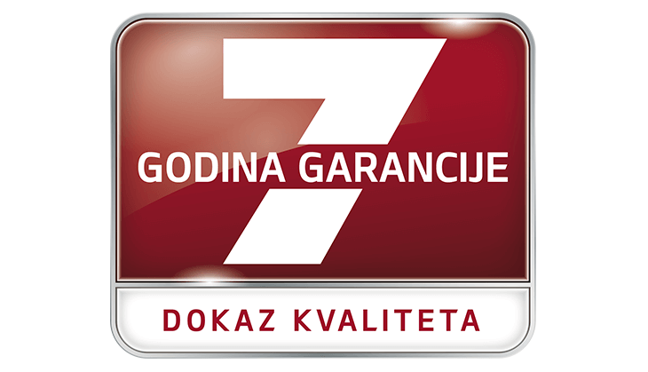
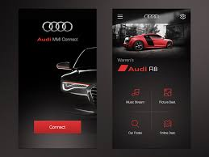
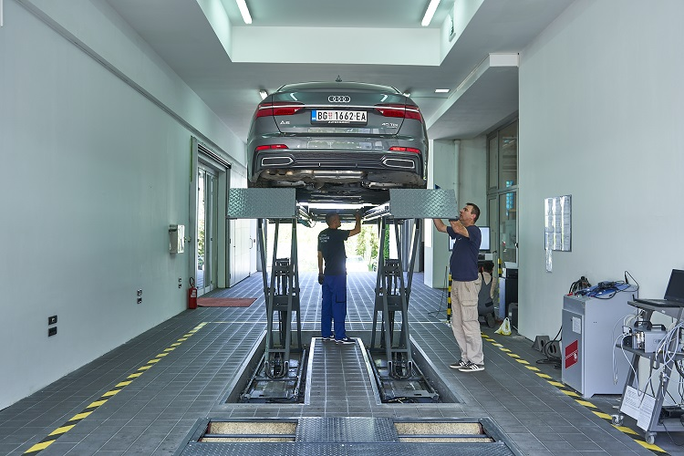

Generalni
uvoznik
za
vozila


Kliknite na dugme za posetu Youtube kanala kompanije AUTOSTAR.
7-godišnja garancija za nova VW vozila jasno predstavlja našu samouverenost u kvalitet naših proizvoda i fabrika širom sveta. Ovo samouverenost proizlazi iz kvaliteta naših delova i visoke produktivnosti u Volkswagenovim fabrikama, a tu samouverenost prenosimo i na Vas.
7 godina, bez dodatnih troškova. To je 2.555 dana ili 150 hiljada kilometara bezbrižne vožnje i niskih troškova održavanja. To je duševni mir koji osigurava 7-godišnja garancija. Pored toga garancija je prenosiva na druge vlasnike što održava vrednost Vašeg vozila i čini ga privlačnijim u daljoj prodaji.
Sa Audi Connect aplikacijom imaćete Vaše vozilo uvek pod kontrolom. Pristupiti svim važnim podacima možete i preko pametnog časovnika. Funkcije su dostupne u zavisnosti od aktiviranog paketa Audi Connect usluga: Infotainment Online ili Care Connect.
U bilo kom trenutku proverite stanje goriva ili podatke o poslednjoj vožnji. Da li ste zaključali automobil? Ne brinite, sa Audi Connect aplikacijom bićete bez sumnji. Uz pomoć funkcije “Poslednja Parking Pozicija” uvek ćete naći automobil na najlakši način. Tu je čak i daljinska funkcija honk and flash. Planirate put? Pošaljite destinaciju direktno iz kuće u navigacuju vozila. Sa funkcijom Time Manager Audi Connect pomaže da planirate vreme efikasnije. Ona proverava Vaš raspored u kalendaru i na osnovu aktuelnog stanja u saobraćaju Vas podseća da, ukoliko ima zastoja, krenete ranije kako bi stigli na vreme.
Poštovani klijenti, obaveštavamo Vas da je u sklopu našeg centra počeo sa radom tehnički pregled vozila Vršimo tehnički pregled svih vrsta vozila-putnički i teretni program do 3,5 tone Vršimo tehnički pregled prikolica najveće dozvoljene mase 750 kg Vršimo tehnički pregled mopeda i motocikala Usluge utiskivanja broja šasije i motora Izdavanje registracionih nalepnica na licu mesta
